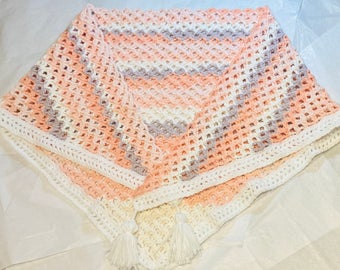

1. Handmade scarf
Difficulty: easy
For my beginner crocheters, this is the project for you! Many crocheted scarves feature just one-row repeats consisting of only basic stitches. A spool of yarn meeting or exceeding 500 yards/460 meters in yardage should be sufficient for one scarf. I recommend the Caron Latte Cakes brand for those who are looking for a more luxurious material. The scarves I made, pictured above, are all made from this yarn!
Patterns:
Rose Buds Scarf NATI on Youtube
Trinity Stitch Scarf NATI on Youtube
2. Winter hats
Difficulty: easy
Winter hats are for those who want a smaller and quicker gift alternative to the scarf. They can both be constructed with basic stitches and one-row repeats, but the yardage for a hat hovers at around 80 yards/73 meters. Consider a thicker, wool based yarn for this project. You could probably dish out 2-3 hats per spool, or even more if you’re extra conservative in your materials. For a fun project, try creating winter bundles by making both scarves and hats!
Patterns:
Andes Beanie CJ Design on Youtube
3. Velvet plushies
Difficulty: intermediate
Velvet plushies are a type of amigurumi - the Japanese term describing the art of doll-making through knitting and crochet. This needle art skill especially showcases creativity, with a diverse array of unique patterns available online. Chances are there’s a pattern for everything you could possibly want to create, from movie characters to fruit themed whales. The nature of amigurumi calls for more knitting and crochet experience. But don’t worry! Velvet plushies are on the easier end of the spectrum. I personally use Yarn Bee's Adore-a-Ball brand to supply my velvet yarn projects. Just pair it with a large hook, and you’re ready to create the softest and fluffiest dolls available!
Patterns:
Crochet Ghost Plush Original Pattern on my Etsy
Crochet Whale Plush KnitGrit on Youtube
4. Stuffed animals
Difficulty: intermediate - advanced
Stuffed animals also fall under the category of amigurumi. The web is filled with free patterns varying widely in difficulty for virtually any animal you can think of - and if it isn’t, you can always try designing your own. Yarn Bee's Sweet Delight is the yarn brand I recommend for regular amigurumi. The bunnies I made are just one option among thousands available to you. This is your chance to be experimental and extra creative!
Patterns:
Crochet Bunny Odinka Wisanindhi on Youtube
5. Coin purses
Difficulty: advanced
Crochet coin purses make adorable gifts, and the possibilities for what you can create are no less abundant. I’ve seen coin purses made out of amigurumi animals, along with the fox and flower purses pictured above. You may want to purchase some purse frames if you plan on making these. Many frames have little holes where yarn is passed through to secure the clasp. If you are not sure what purse to create - try searching up some ideas - I’m sure you’ll be impressed by what others have made.
Patterns:
Flower Coin Purse JoanVal Crochet on Youtube
Fox Coin Purse Crochet Cuties Pattern on Youtube
6. Keychains
Difficulty: beginner - intermediate
Keychains can be considered as simply amigurumi attached to a chain. Any small amigurumi project can be turned into a keychain by adding a keyring. To make an octopus keychain, for example, you would only need to make a small octopus plush, (which will make an excellent gift all by itself!) then attach it to a chain. If you wanted, you could even attach multiple amigurumi charms to a single keyring!
Patterns:
Crochet Octopus Crochet Cuties Pattern on Youtube
7. Ear warmers
Difficulty: easy

Ear warmers are a super quick present for gift givers in a pinch. Many different headband designs are available, but they are all generally easy to work up. Once you get your rhythm down, you’ll be finishing these in less than 15 minutes! Any type of yarn would be suitable for this project - just make sure to follow guidelines if you are using a pattern.
Patterns:
Bow Headband Claudetta Crochet on Youtube
8. Small drawstring pouches
Difficulty: easy
Try making these little pouches for friends and family who enjoy collecting small trinkets! They are popular among crystal collectors and those who just need a small space to store loose items. Add some colorful beads to the ends of the drawstrings for an additional touch!
Patterns:
Drawstring Pouch TheYarnBowl Crochet on Youtube
9. Shawl
Difficulty: intermediate
Shawls are a year-round garment, making it a perfect gift for any time of the year. For fall and winter, you could opt for a heavier yarn material: wool and cotton blends will work well. For the warmer months throughout spring and summer, a nylon blend is perfect for creating a lightweight and breathable fabric. Shawls generally aren’t very difficult to make - it’s only the beginning portions that may be difficult to understand. Once the pattern is established, it simply repeats until you reach your desired size.
Patterns:
Triangle Shawl Anniedesigncrochet on Youtube
10. Crochet fingerless gloves
Difficulty: intermediate
And finally - last but not least - a cozy pair of fingerless gloves! Yet again I recommend the Latte Cakes for this project. The yarn is a nylon-acrylic mix covered in fuzz: the nylon gives the gloves a slight elasticity, making it easy to put on and take off. The fuzz is lightweight and soft. You could even transform these gloves into wrist warmers by simply reducing the sleeve. Likewise, you could go in the opposite direction and turn them into arm warmers by elongating the sleeve. These would make awesome Christmas gifts, and they’re sure to be enjoyed during the winter months!
Patterns:
Fingerless Gloves Amanda Love Santos on Youtube